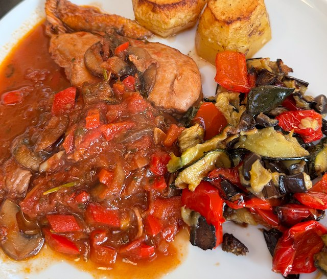

Chicken Cacciatore

Serves: 4
Cook Time: 1 hour
Ingredients
- 1 chicken, broken down to breast, wings, thighs and legs
- ½ onion, diced
- 250g mushrooms, sliced
- 4 garlic cloves, sliced
- 1 red pepper, sliced
- 1 tsp oregano
- ½ tsp rosemary
- 2 tbsp tomato puree
- 1 400g tin tomatoes, chopped
- 1 chicken stock pot
- small bunch parsley, chopped
- 125ml red wine
Method
Onions. Gently fry the onions in a pan.
Chicken. Heat pan to hot. Add oil, chicken, salt. Turn heat to medium and brown the chicken. Deglaze pan with water and reserve. You will have to work in batches to brown all the chicken.
Mushrooms. Heat a pan to hot. Add mushrooms, salt and pepper and fry hard until mushrooms cooked. Deglaze pan with water and reserve.
Add garlic, red pepper, oregano and rosemary to the onions and fry for 2 min. Add tomato puree and fry for 2 min more.
Add tomatoes, stock, parsley, wine, mushroom and reserved juices. Stir round well. Add chicken and top with water till just covered.
Cook on low heat for 30 min. Taste for salt.